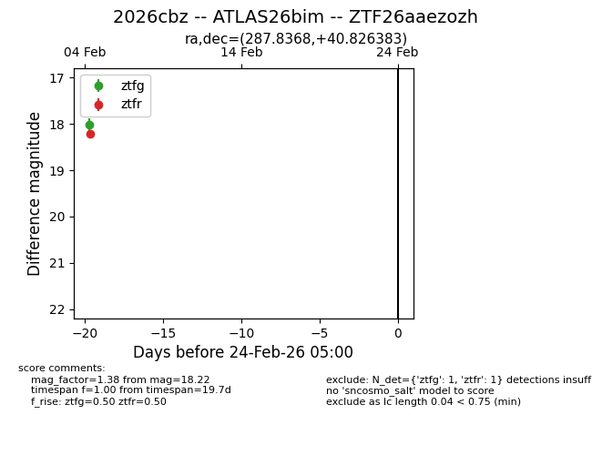
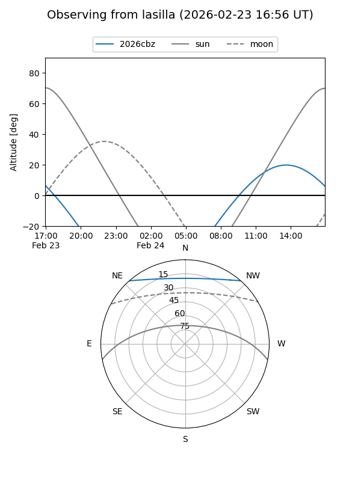
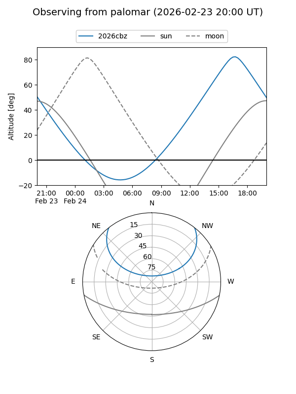

2026cbz
Target 2026cbz at 2026-02-24 09:08
Aliases and brokers:
FINK: link
Lasair: link
ALeRCE: link
TNS: link
YSE: link
alt names
ZTF26aaezozh (ztf,fink_ztf)
2026cbz (tns,yse)
ATLAS26bim (atlas)
Coordinates:
equatorial (ra, dec) = 287.8368,+40.82638
equatorial (HMS+DMS) = 19:11:20.83,+40:49:34.98
galactic (l, b) = (71.9931,+13.86760)
Flags:
Photometry:
last ztfg=18.02, ztfr=18.22
1 ztfg, 1 ztfr detections
Lightcurve

Visibility


Additional plots